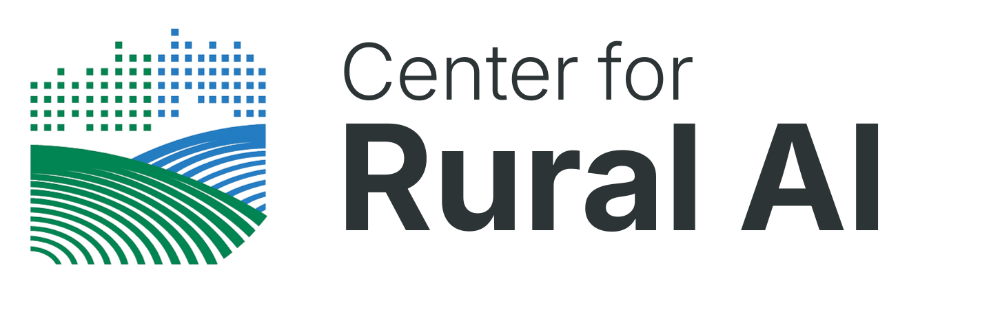
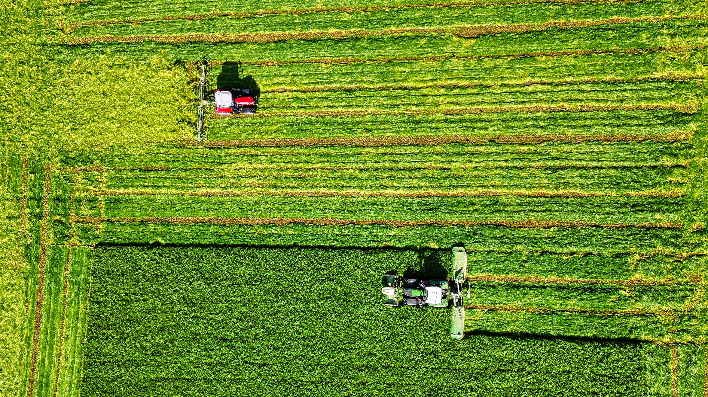
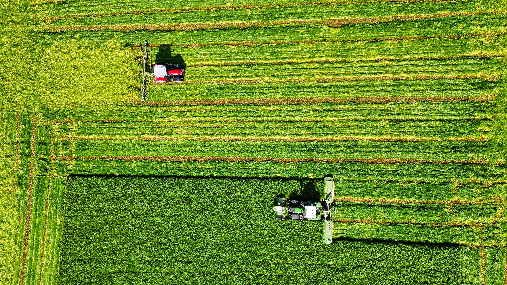

Donor Introduction


The Center for Rural AI (CRAI) is a newly formed 501(c)(3) nonprofit focused on a structural economic disparity in the United States: the lagging participation of rural communities in artificial intelligence. Rural America comprises a significant portion of the nation's population and economy, yet it has historically lagged in access to digital infrastructure, tech jobs, and innovation networks. The rise of AI has exacerbated these challenges.
CRAI exists to shift this trajectory by building the institutional capacity rural regions need to adopt, deploy, and influence AI systems in ways that create economic opportunities and enhance community outcomes.

CRAI and the AI Institute at Fort Lewis College in Durango, Colorado, a rural public institution advancing comprehensive AI education and engagement, have initiated discussions on collaborative pathways. This provides direct insight into the opportunities and constraints rural institutions face. In parallel, CRAI is engaging with frontier AI companies so that rural use cases inform product design while the technology is still evolving.
Rural regions possess underutilized competitive advantages, including lower operating costs, stronger long-term community retention, and rich real-world data environments in agriculture, healthcare, and logistics that are relevant to AI use cases. While rural communities have strengths, persistent training, infrastructure and digital adoption gaps curtail their ability to participate at scale in the emerging AI economy.
Federal policy is increasingly aligned with addressing regional disparities. The CHIPS and Science Act and related place-based programs authorized under it are designed to build technology capacity and innovation ecosystems outside of traditional tech centers. The Regional Technology and Innovation Hubs (Tech Hubs) program, for example, directs up to ~$10 billion over five years to support distributed technology innovation networks across the U.S., with appropriated funding already underway. Such federal initiatives provide structural support for innovation ecosystems that include rural and underserved communities.
"CRAI exists to ensure rural communities lead—not follow—in the AI economy."
 

Federal and corporate investment tends to follow demonstrated results; it rarely initiates them. Early philanthropic capital is essential to fund assessments, pilots, technology infrastructure and baseline operating capacity that generate the evidence of impact required to unlock scalable public and private funding streams. Without this initial support, promising rural AI adoption efforts may fail to reach the proof points needed to secure continued investment.
To launch core programs, demonstrate impact across 8–12 partner institutions, build foundational infrastructure, and position for access to federal funding beginning in 2027.
If this opportunity resonates, we welcome a conversation about how your partnership can help ensure rural communities lead, not follow, in the AI economy.